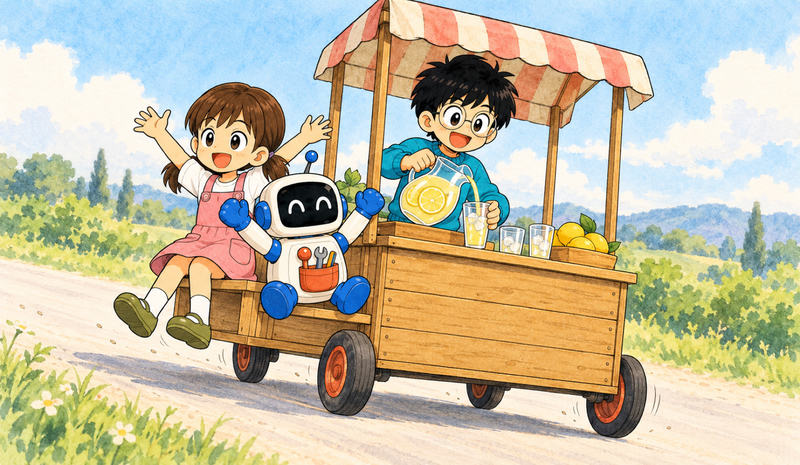
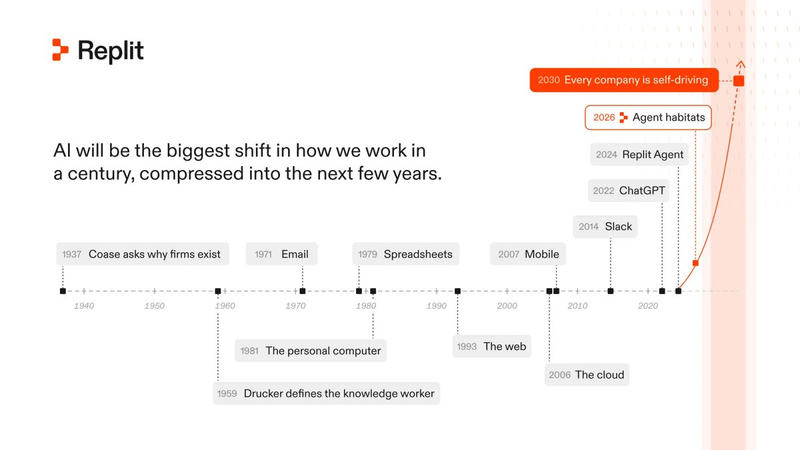

Feature 01 · VERBATIM · 2026 10
The Rise of the Self-Driving Company
In 1937, British Nobel Prize-winning economist Ronald Coase asked, “Why do firms exist?” His answer was transaction costs. It’s often cheaper to organize economic activity inside a company than to coordinate it through markets.


But companies have their own coordination costs: management, meetings, departments, reporting, and bureaucracy.
For more than a century, we’ve accepted these costs as the price of doing business.
In 2011, Marc Andreessen wrote that software was eating the world.
In 2016, we built Replit around the belief that everyone should be able to create it.
Software transformed entire industries, but companies still depend on people to operate that software and coordinate work across teams.
AI promises an even bigger shift. As agents take on more of the execution and coordination, companies can work more efficiently, and their people can pursue more ambitious goals. Realizing that potential will require companies to rethink how they organize and make decisions.
Companies built around this new way of working will be Self-Driving Companies. At Replit, that shift is already underway.
By the end of 2030, every company in the Fortune 500 will be a Self-Driving Company.
In Self-Driving Companies, people define the goals, exercise judgment and taste, and remain accountable. Agents use the company’s knowledge and systems to execute toward those goals, with clear boundaries for when to act and when to seek approval.
Companies that become self-driving will force an existential choice on their competition: change how you work or watch competitors do what you cannot.
How Work is Changing
We’re seeing this shift at Replit.
It started in engineering. Engineers nearly tripled their code output in the first half of 2026 while review times, reversions, and product incidents stayed flat.
Then people across the company began putting agents to work, building software and solutions that took repetitive work off their plates so they could spend more time on problems that needed their expertise. Designers turned ideas into working product changes, and support used agents to investigate customer issues.
The nature of work itself began to change. People could act on problems they once had to hand off. They could try an approach, share something tangible, and build it together. More ideas and feedback surfaced, and the people raising them were emboldened to help build the solution.
People spent more time at whiteboards, deciding what to build. Engineers worked on hardening the systems agents depend on so they could delegate more work. Work became less repetitive, more creative, and more collaborative.
Alongside the productivity gains, more people experienced the satisfaction of making something useful, solving difficult problems, and seeing their ideas become real. People had more freedom to shape their work and more confidence in what they could accomplish**.** They don’t feel like they’re being replaced. They feel like they’re being promoted.
Replit has become a Self-Driving Company.
What a Self-Driving Company Requires
Today, many companies face a false choice.
Keep AI in a cage, where its reach is limited but so is its usefulness. Or let it loose in the wild, where agents can go rogue: accessing sensitive data, changing production systems, or sending information outside the company without the right permissions or approvals. A mistake can become a security incident that reaches beyond the company itself, as the Hugging Face incident demonstrated.
One path limits capability. The other sacrifices control. Neither enables a company to become self-driving.
A Self-Driving Company will need a foundation that lets it embrace the power of AI without the risk.
Self-Driving Companies will make agents useful to everyone. The people closest to the problem should be able to put them to work without becoming engineers. A company cannot become self-driving if only its technical teams can participate.
Today, most agents live somewhere chaotic. They run in chat windows, personal accounts, and one-off scripts, holding whatever credentials and data someone handed them. Nobody decided what they could touch, and nobody can see what they did.
As agents take on more work, they need an Agent Habitat: an environment where they can use the company’s knowledge and systems, coordinate with people and other agents, and act within the boundaries the company controls.
The habitat must control access, define when human approval is required, and limit the impact of mistakes. As AI makes it easier to discover and exploit vulnerabilities, companies will also need agents to find weaknesses and strengthen their defenses. Security must scale with autonomy.
Governance of the habitat will also help the company become smarter. When someone corrects an agent, that correction should be reviewed and made available to improve future work. When one team develops a useful workflow, others should be able to build on it. The habitat becomes a shared body of knowledge, shaped by the people who work within it, helping agents act with more of the company’s expertise, taste, and judgment.
Self-Driving Companies must also remain free to change their models while retaining control of their knowledge, systems, and decisions. As Satya Nadella puts it, “we need to separate the supply of intelligence from the authority over it.”
Making Every Company a Self-Driving Company
With Replit for Business, we’re building the foundation to bring what we have learned inside our own company, and help every company become a Self-Driving one. The ambition is to enable everyone to turn their expertise into working software and completed work.
We’re seeing large companies move faster with Replit. At Sumitomo Mitsui Finance and Leasing (SMFL), “a development process that previously required six people working for six months was completed by just one person in one week,” says Yoshiyuki Fukuma, GM of Digital Transformation. “A project originally estimated at approximately JPY 3 billion for the full development lifecycle is now expected to be completed for less than JPY 1 billion,” says Takeshi Fujiwara, Corporate Officer and Head of Digital Lab.
Ronald Coase explained the firm through the economics of organizing work. As AI changes those economics, we have an opportunity to rethink the organization itself: how much a small team can accomplish, how far an individual’s expertise can reach, and what a company can attempt.
We believe the biggest economic impact of AI will come from this reinvention of the firm. Self-Driving Companies will organize around people setting direction and exercising judgment, with agents carrying more of that intent through to execution.
Software ate the world. Now it’s learning to run it.